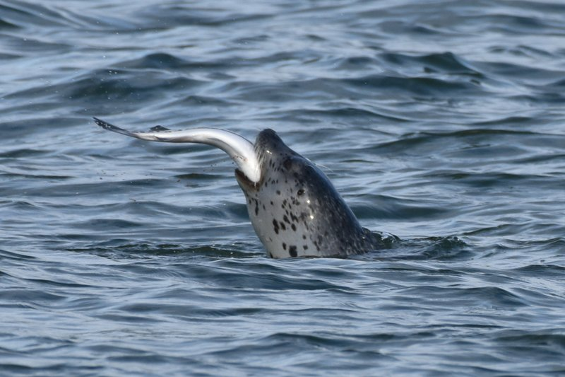
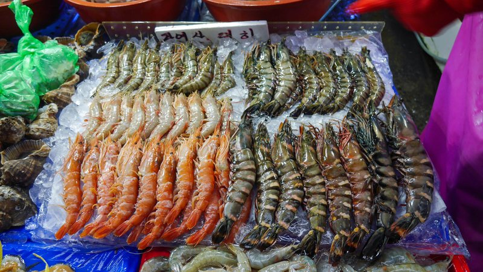
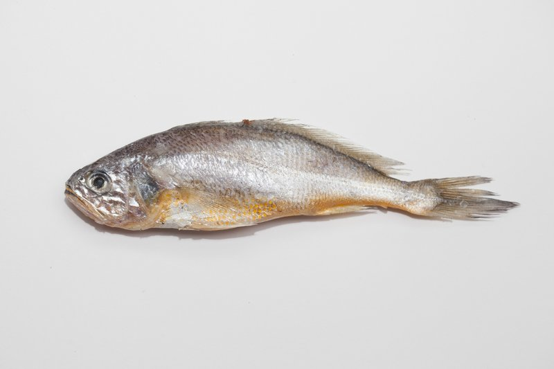

--
监测数据点--
一类水质占比--
平均pH值--
平均COD mg/L水质类别 Water Quality
一类 Excellent
二类 Good
三类 Fair
四类 Poor
劣四类 Very Poor
2017-2023 各指标年度均值变化
近岸 / 过渡 / 远海 指标对比
各指标随离岸距离变化趋势 | 点击指标切换
各区域水质类别数量及占比
各月份监测指标均值变化 (4-12月)
| 城市 | 监测点 | pH均值 | COD均值 | 无机氮均值 | 石油类均值 |
|---|
渤海污染对以下物种造成严重威胁，种群数量持续下降

濒危 EN
斑海豹 Spotted Seal
Phoca largha
渤海唯一的鳍足类海洋哺乳动物，国家一级保护动物。每年冬季在辽东湾冰区繁殖，石油污染、塑料垃圾导致栖息地缩减，种群不足2000头。
石油污染
栖息地丧失
塑料摄入

近危 VU
中国对虾 Chinese White Shrimp
Fenneropenaeus chinensis
渤海湾传统渔业支柱品种，曾是黄渤海最重要的经济虾类。水体富营养化、重金属污染导致产卵场退化，野生资源量下降90%以上。
重金属污染
富营养化
过度捕捞

衰退 DE
小黄鱼 Yellow Croaker
Larimichthys polyactis
渤海最重要的底层经济鱼类之一，曾是沿海渔民的主要渔获。海洋污染、赤潮频发导致幼鱼成活率骤降，资源量仅为历史高峰的5%。
赤潮影响
水质恶化
微塑料摄入